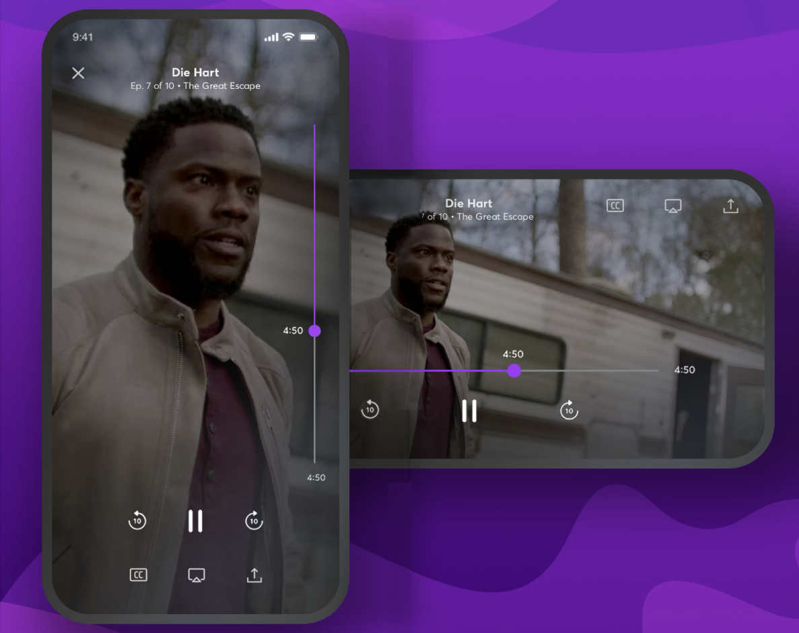
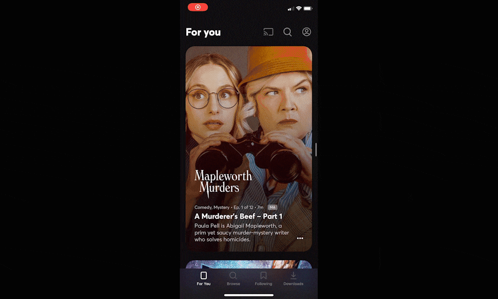
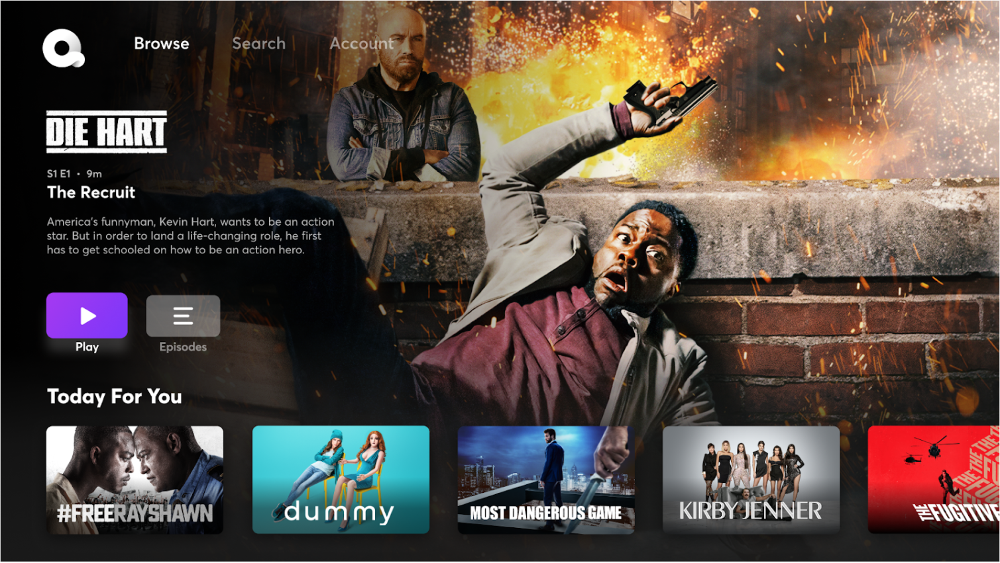
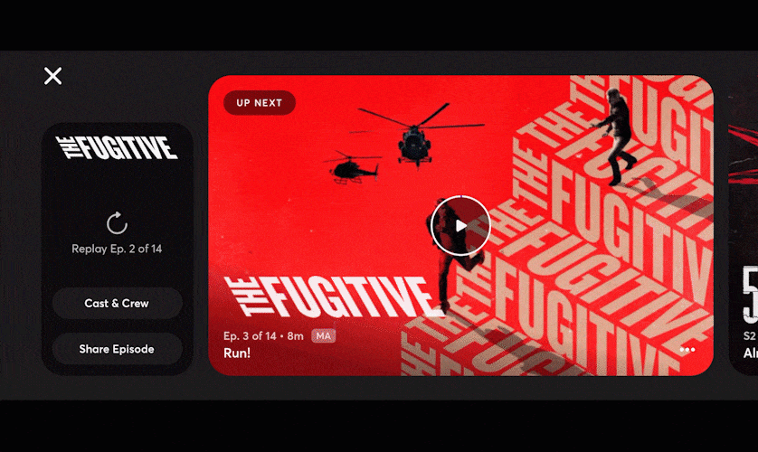
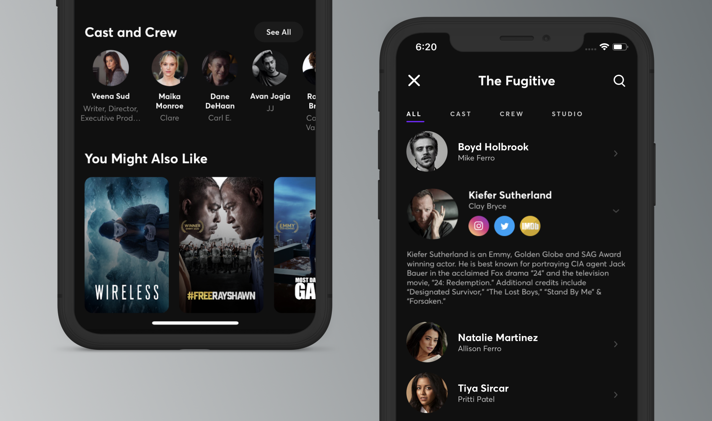

I worked at Quibi for two years. I joined in November of 2018 as the first product designer and was tasked with building out the app from the ground up. I was joined by an incredibly talented team shortly thereafter to finalize the app for launch in April of 2020. While there are multiple Harvard Business School case studies to be written about all the reasons why Quibi failed as a business, I look back on my time there fondly.

Video Player
One of the most unique things about Quibi was its video player that I designed. Designed to take advantage of the screen in both portrait and landscape orientation, the Quibi mobile app featured a video player that I believe was both user-friendly and futuristic.
I came up with the idea for a "vertical scrubber" early on, and we later implemented the idea as the extra onscreen real-estate unlocked some fun possibilities. I also came up with "left-handed mode" that would optimize the video player depending on how a user held the phone.

Home Feed
For Quibi, all pieces of content were premium 3-10 minute long episodes. Our goal with the home feed was to split the difference between the traditional "sea of tiles" that you see in every streaming service app (and what we'd include on the "browse" tab), and a traditional social media feed where you scroll vertically.
The resulting design was featured a "scroll-and-lock" interaction with an autoplaying clip after the show art faded away. This allowed each piece of content to get its time in the sun.
A full-screen autoplaying home feed was also in the works for an A/B test that didn't quite make it out the door.

Living Room Apps
I designed and shipped fully-featured Quibi apps on the Web, Apple TV, Android TV, Roku, and Amazon's Fire Stick.
We started by supporting Airplay and Chromecast soon after the launch of the mobile apps. Immediately after finishing the design work for those, I began to work on a more native solution for living rooms.

End Browse / Autoplay
End Browse was our take on the "What do I watch next?" experience.
If you were watching something serialized, we'd show you the next episode of that show in a big tile. If you had just finished something else, we'd present you with some related shows for you to jump into.
This design worked in both portrait and landscape, since the user would be finishing episodes in either orientation.

Cast & Crew
Ok, I know the "credits" aren't the most exciting thing in the world. In fact, on a streaming platform, they're probably the thing you think about the least, unless you literally know someone in the show you're watching.
When we set out to design the credits for Quibi, the goal was twofold: 1) avoid the scrolling text that everyone skips immediately 2) bring the concept of credits into the 21st century and actually provide value to the user and the talent/crew.
Quibi's Cast & Crew page allowed you to learn more about the stars and those who worked on the show and integrated their social media accounts and IMBD pages.